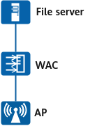

Users want to install third-party extension applications on an AP, which can be implemented by installing a container on the AP.
Before installing a container, ensure that:

Item |
Data |
|---|---|
File server address |
Server IP address: 192.168.1.100 Server user name: admin Server password: YsHsjx_202206 |
Container |
Public key file for installing the container: public-key2.txt Fingerprint file for installing the container: fingerprint.txt (Fingerprint information is in the TXT file and needs to be copied. For example, the copied content is 1652C1AA2AC09172521572E7F359D9A17DE5BFD5.) Container file name: oas.zip |
<HUAWEI> system-view [HUAWEI] sysname WAC [WAC] wlan [WAC-wlan] ap file-transfer sftp-server ip-address 192.168.1.100 username admin password cipher YsHsjx_202206
[WAC-wlan] install container public-key ap-group ap-group1 public-key public-key2.txt fingerprint 1652C1AA2AC09172521572E7F359D9A17DE5BFD5 // //public-key.txt is the name of the public key file. To use the fingerprint key, open the fingerprint file and copy its content. For example, the copied content is 1652C1AA2AC09172521572E7F359D9A17DE5BFD5. Info: Operating, please wait for a moment......done. [WAC-wlan] install container application-software ap-id 1 software-name oas.zip Info: Operating, please wait for a moment......done. [WAC-wlan] quit
# Run the display container install status command to check the container installation progress.
[WAC] display container application-software install status all
Total: 1
--------------------------------------------------------------------------------------------------------------------------------
ID Name AP Type AP Group AP MAC FileName Last Update Time Update Status
--------------------------------------------------------------------------------------------------------------------------------
1 hw0 AirEngine5776-26 ap-group1 00e0-fc76-e320 oas.zip 2025-05-19/10:11:04 succeed
--------------------------------------------------------------------------------------------------------------------------------